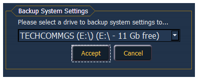
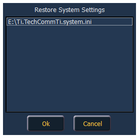

These settings allow you to backup and restore all of the ECU system settings, including Net3 services.
This is useful for sharing settings between consoles, including ETCnomad.
{Backup System Settings} will open a window that allows you to save .ini file to a selected drive. To backup settings, select a drive from the drop down menu, and press {Accept} to save or {Cancel} to exit without saving.

{Restore System Settings} will open a window that allows you to select a saved.ini file. Select the desired file and press {Ok} to restore settings. Press {Cancel} to close the window without restore settings.
